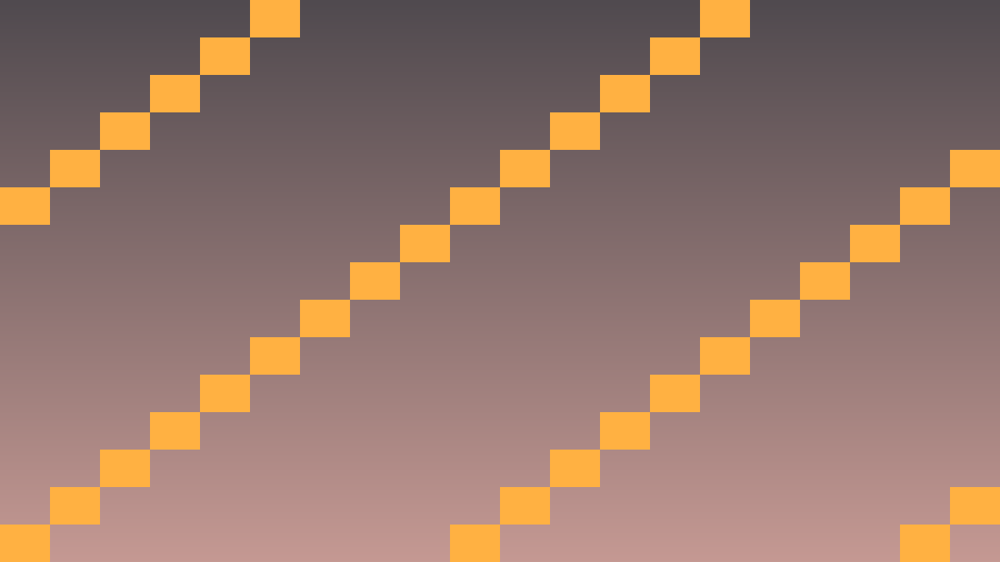
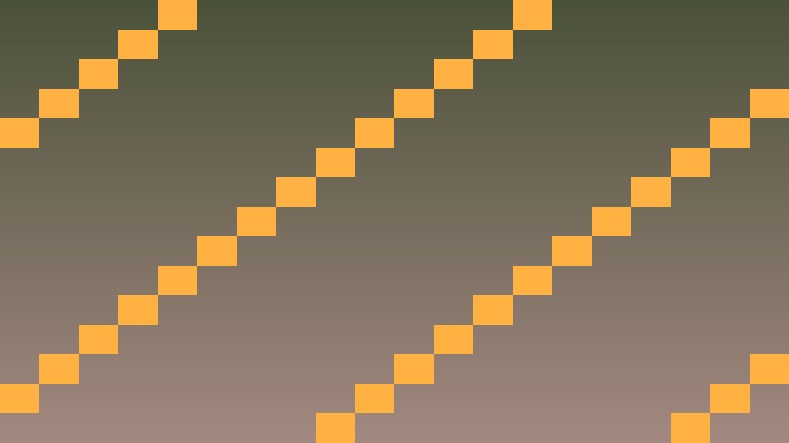

5.4 Procedural generation (procedurālā ģenerēšana)
Stundas uzdevums: Ģenerēt nejaušus, bet sakārtotus līmeņus ar algoritmu.
Teorija: procedurālā ģenerēšana (Procedural Generation) un 2D režģa algoritmi
Algoritmiska struktūru radīšana un pseidogadījuma sēkla (seed)
Procedurālā ģenerēšana (procedural generation) ir metode, kas telpiskus plānojumus, maršrutu tīklus vai reljefa kartes izveido ar algoritmu, nevis zīmējot katru šūnu manuāli. Tā darbojas līdzīgi kā matemātiska recepte — tā vietā, lai diskā glabātu simtiem gatavu shēmu, pietiek ar īsu algoritmu un vienu veselu sākumskaitli jeb sēklu (seed). Inicializējot pseidogadījuma ģeneratoru ar Random rng = new Random(seed), viena un tā pati sēkla vienmēr izveidos identisku skaitļu virkni un tieši tādu pašu struktūru, bet cita sēkla — pilnīgi jaunu izkārtojumu.
Izplatītākās 2D režģa ģenerēšanas pieejas ir trīs:
Random Walk(nejaušā pastaiga): sāk no izvēlēta punkta un katrā solī pārvietojas nejaušā no četriem pamatvirzieniem, atzīmējot apmeklētās šūnas kā brīvas ejas.BSP(Binary Space Partitioning — binārā telpas sadalīšana): taisnstūra apgabalu rekursīvi dala mazākās daļās un pēc tam savieno tās ar koridoriem.Cellular Automata(šūnu automāti): režģi sākumā aizpilda nejauši un pēc tam vairākās iterācijās izlīdzina pēc kaimiņu šūnu skaita noteikumiem (piemēram, organiskām salu vai alu kontūrām):
using System;
Random pirmais = new Random(42);
Random otrais = new Random(42); // Tā pati sēkla (42)
Random tresais = new Random(99); // Cita sēkla (99)
// pirmais.Next(0, 100) un otrais.Next(0, 100) dod identiskus skaitļus,
// bet tresais.Next(0, 100) veido pavisam citu virkni.Divdimensiju masīvs (int[,]), robežas un sasniedzamības validācija
2D telpisko režģi C# kodā ērti glabāt taisnstūra divdimensiju masīvā int[,] rezgis = new int[Platums, Augstums], kur katrs skaitlis apzīmē šūnas tipu (piemēram, 1 — siena, 0 — brīva šūna), bet attēlošanas brīdī indeksus pārvērš ekrāna koordinātās (x * sunasIzmers, y * sunasIzmers):
using System;
int[,] rezgis = new int[Platums, Augstums];
Random rng = new Random(sekla);
for (int x = 0; x < Platums; x++)
for (int y = 0; y < Augstums; y++)
rezgis[x, y] = 1; // Sākumā visas šūnas ir aizpildītas.
int cx = Platums / 2, cy = Augstums / 2;
for (int solis = 0; solis < SoluSkaits; solis++)
{
rezgis[cx, cy] = 0;
int virziens = rng.Next(0, 4);
if (virziens == 0 && cx > 1) cx--;
else if (virziens == 1 && cx < Platums - 2) cx++;
else if (virziens == 2 && cy > 1) cy--;
else if (virziens == 3 && cy < Augstums - 2) cy++;
}Robežnosacījumi > 1 un < Platums - 2 neļauj algoritmam iziet ārpus masīva un saglabā neskartu ārējo malu. Tomēr nejaušība pati par sevi negarantē, ka divi attāli punkti būs savienoti, tāpēc pēc ģenerēšanas veic sasniedzamības validāciju ar apgabala aizpildīšanu (flood fill jeb meklēšanu plašumā) — līdzīgi kā ielejot ūdeni cauruļvadu ieejā un pārbaudot, vai tas aizplūst līdz izejai; ja mērķa šūna paliek nesasniegta, režģi uzģenerē atkārtoti:
// Rekursīva apgabala aizpildīšana (flood fill) pa brīvajām šūnām (0):
private void AizpilditNo(int x, int y, bool[,] apmeklets)
{
if (x < 0 || x >= Platums || y < 0 || y >= Augstums) return;
if (rezgis[x, y] != 0 || apmeklets[x, y]) return;
apmeklets[x, y] = true;
AizpilditNo(x + 1, y, apmeklets);
AizpilditNo(x - 1, y, apmeklets);
AizpilditNo(x, y + 1, apmeklets);
AizpilditNo(x, y - 1, apmeklets);
}
// Pēc izsaukuma no sākuma pārbauda: vai apmeklets[merkaX, merkaY] ir true.Kā šo izmantot projektā
Atceries: ar redzamu efektu redaktorā nepietiek. Paskaidro, kura C# class (klase) glabā stāvokli, kura method (metode) to maina un kā Godot node (mezgls) struktūra izmanto šo kodu.
Pārbaudi: C# kods pārbauda failu kļūdas, validē datus, izmanto versijas lauku un pamato time complexity (algoritmu sarežģītību).
public class PersistenceCheckpoint
{
public string Lesson = "5.4 Procedural generation";
public bool UsesCSharp = true;
public bool HandlesMissingFile = true;
public bool ValidatesData = true;
public bool DocumentsComplexity = true;
}Praktiskie uzdevumi
1. uzdevums -
Ģenerē labirintu ar Random Walk
Kur strādāt: Izveido Scripts/MazeGenerator.cs parastajai C# klasei; grid lauku un ģenerēšanas metodi raksti tajā. Pārbaudei izveido Scripts/MazeDemo.cs, piesaisti to Scenes/MazeDemo.tscn Node2D saknei un ģenerēšanu un izdruku izsauc _Ready().
Beigās kods pats izraks ejas tukšā režģī.
- Izveido
int[,] grid = new int[15, 15];. - Aizpildi to visu ar vērtību 1 (siena).
- Sāc no centra un iestati tur vērtību 0 (eja).
- Uzraksti loop (ciklu), kas 200 reizes paiet nejaušā virzienā.
- Iestati katrā solī jauno šūnu uz 0.
- Pārbaudi, ka gājējs nepamet režģa robežas.
- Izdrukā režģi Output panelī ar simboliem
#un atstarpi.
public class MazeGenerator
{
private const int Size = 15;
private readonly int[,] grid = new int[Size, Size];
public void Generate()
{
Random rng = new Random();
for (int x = 0; x < Size; x++)
for (int y = 0; y < Size; y++)
grid[x, y] = 1; // siena
int px = Size / 2, py = Size / 2;
for (int step = 0; step < 200; step++)
{
grid[px, py] = 0; // eja
int dir = rng.Next(0, 4);
if (dir == 0 && px > 1) px--;
else if (dir == 1 && px < Size - 2) px++;
else if (dir == 2 && py > 1) py--;
else if (dir == 3 && py < Size - 2) py++;
}
}
}Gatavs, kad: Output panelī redzams režģis ar savienotām ejām, un tās nekad neiziet ārpus malām.
2. uzdevums -
Pārvērs režģi par spēles laukumu
Kur strādāt: Režģa attēlošanu un spēlētāja novietošanu raksti Scripts/MazeDemo.cs. Režģa datus iegūsti no Scripts/MazeGenerator.cs; laukuma un spēlētāja mezglus veido Scenes/MazeDemo.tscn.
Beigās uzģenerēto labirintu varēs redzēt un tajā staigāt.
- Pievieno scēnai
TileMap(flīžu karte) vai izmantoColorRectmezglus. - Uzraksti divkāršu loop pār visu režģi.
- Novieto sienas node katrā vietā, kur vērtība ir 1.
- Reizini režģa koordinātes ar šūnas izmēru, piemēram 64.
- Novieto spēlētāju vietā, kur vērtība ir 0.
- Palaid un pastaigā pa labirintu.
- Palaid vēlreiz un pārliecinies, ka labirints ir citāds.
Gatavs, kad: katrā palaišanas reizē labirints ir atšķirīgs, un spēlētājs var pa to staigāt.
3. uzdevums -
Pārbaudi, vai labirints ir izejams
Kur strādāt: Sasniedzamības pārbaudes metodi pievieno Scripts/MazeGenerator.cs. Atkārtotu ģenerēšanu līdz derīgam rezultātam izsauc Scripts/MazeDemo.cs pirms laukuma attēlošanas.
Beigās tu būsi pārliecinājies, ka izeja tiešām ir sasniedzama.
- Novieto izeju tālākajā režģa stūrī, kur vērtība ir 0.
- Uzraksti method, kas no starta izplatās pa visām savienotajām ejām.
- Atzīmē apmeklētās šūnas otrā režģī.
- Pārbaudi, vai izejas šūna tika atzīmēta.
- Ģenerē labirintu atkārtoti, kamēr izeja ir sasniedzama.
- Saskaiti, cik reižu vidēji vajadzēja ģenerēt.
- Pieraksti, kāpēc šī pārbaude ir obligāta.
Gatavs, kad: spēle nekad nesāk ar labirintu, kurā izeja nav sasniedzama.
Papildu uzdevums - Pievieno random seed (sēklu) atkārtojamībai
Kur strādāt: Sēklu un nejaušo skaitļu ģeneratoru izmanto Scripts/MazeGenerator.cs. Vienādu un atšķirīgu sēklu pārbaudes un izdrukas raksti Scripts/MazeDemo.cs metodē _Ready().
Ja pamatdarbs ir gatavs, ļauj atkārtot to pašu labirintu.
- Pievieno lauku
int seed;. - Iestati to ar
Random rng = new Random(seed);pirms generation (ģenerēšanas). - Ģenerē divas reizes ar to pašu random seed un salīdzini rezultātu.
- Ģenerē ar citu random seed un salīdzini vēlreiz.
- Izdrukā random seed ekrānā, lai to varētu pierakstīt.
Gatavs, kad: ar vienu un to pašu random seed labirints vienmēr sanāk identisks.
Ko sagatavo
Stundas mērķis: Tava spēle pati uzģenerē labirintu ar Random Walk algoritmu, pārvērš to par spēlējamu laukumu un pirms sākuma pārbauda, ka izeja tiešām ir sasniedzama.
GitHub krātuvē jābūt:
- Fails
MazeGenerator.cs. - Trīs ekrānuzņēmumi ar trim dažādiem uzģenerētiem labirintiem.
- Ekrānuzņēmums ar Output paneli, kurā redzams izdrukātais režģis.
- README.md: kāpēc obligāti jāpārbauda, vai izeja ir sasniedzama.
Kā iesniedz: Veic commit (izmaiņu fiksējums) un push (nosūtīšana uz attālo krātuvi). Skolotāja norādītajā vietā ievieto tikai GitHub krātuves saiti; visiem prasītajiem failiem, README.md pierakstiem un pierādījumiem jābūt pašā krātuvē.
Biežākās kļūdas
- Always same maze: Aizmirsts mainīt seed (nejaušības sākumvērtība) vai tiek katru reizi izmantota viena un tā pati vērtība.
- Walls disconnected: Pārbaudi flood fill (apgabala aizpildīšana) - vai visas istabas savienotas.
- Slow generation: Lielam režģis lieto efficient algoritms - A* vai Voronoi.
Godot ekrānuzņēmumi


Koda piemērs (paplašināts)
using Godot;
using System;
public class MazeGenerator
{
private const int Width = 50;
private const int Height = 30;
private readonly int[,] grid = new int[Width, Height];
public void Generate(int seed)
{
Random rng = new Random(seed);
// Visi sienas
for (int x = 0; x < Width; x++)
for (int y = 0; y < Height; y++)
grid[x, y] = 1; // siena
// Random walk
int px = Width / 2;
int py = Height / 2;
for (int step = 0; step < 800; step++)
{
grid[px, py] = 0; // grīda
int dir = rng.Next(0, 4);
if (dir == 0 && px > 1) px--;
else if (dir == 1 && px < Width - 2) px++;
else if (dir == 2 && py > 1) py--;
else if (dir == 3 && py < Height - 2) py++;
}
}
public void RenderToTileMap(TileMap tileMap)
{
for (int x = 0; x < Width; x++)
{
for (int y = 0; y < Height; y++)
{
int tileId = grid[x, y];
tileMap.SetCell(0, new Vector2I(x, y), tileId, Vector2I.Zero);
}
}
}
}